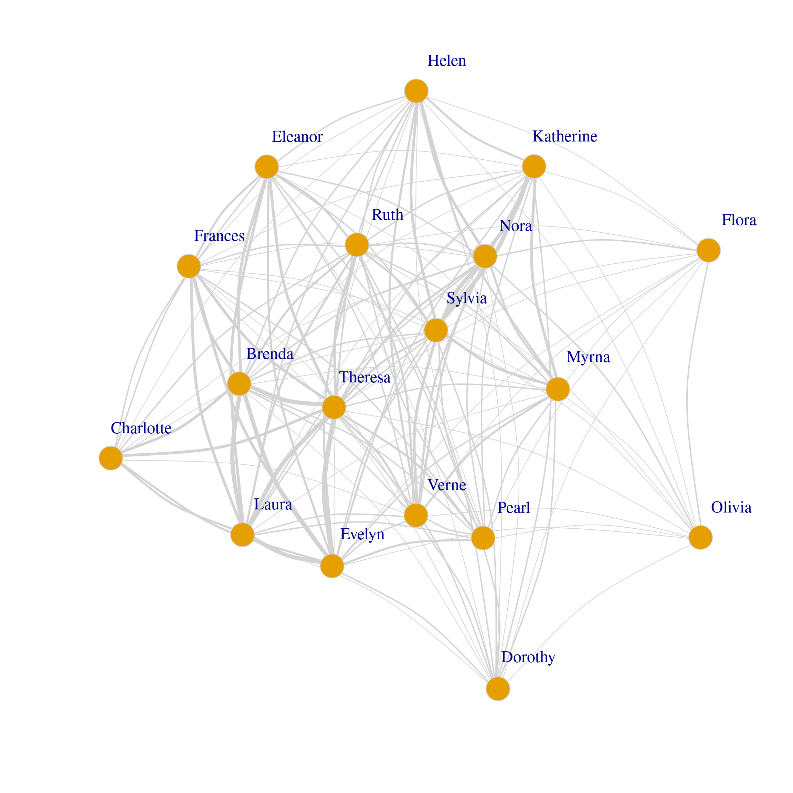
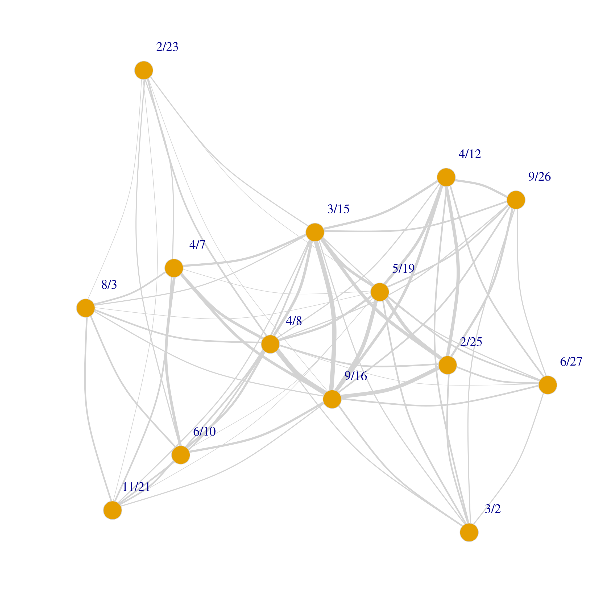
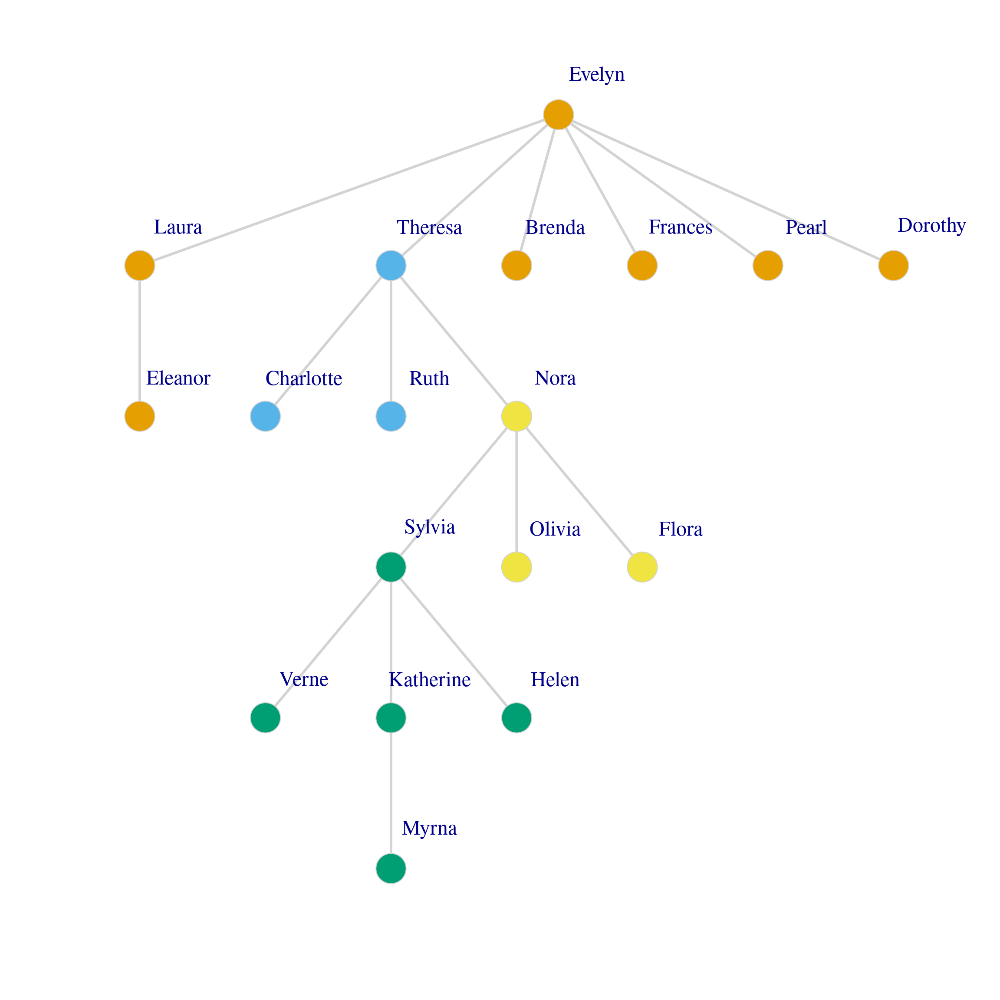
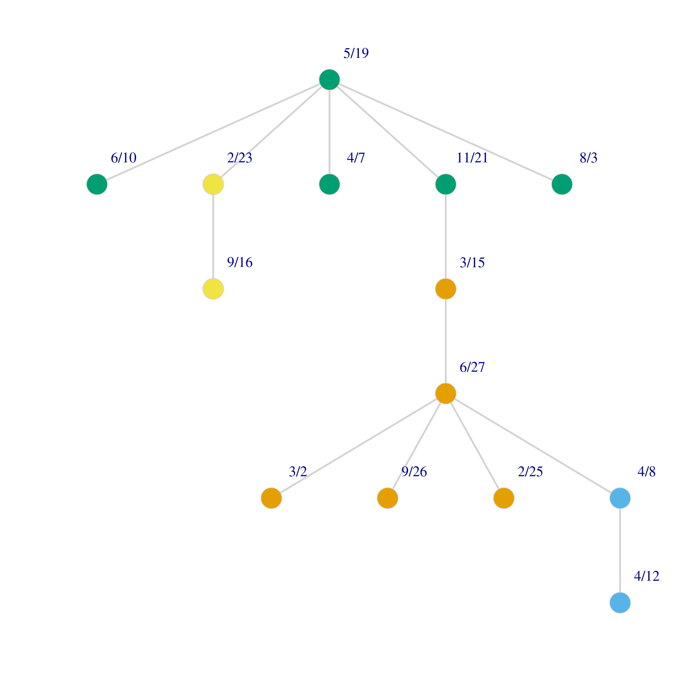
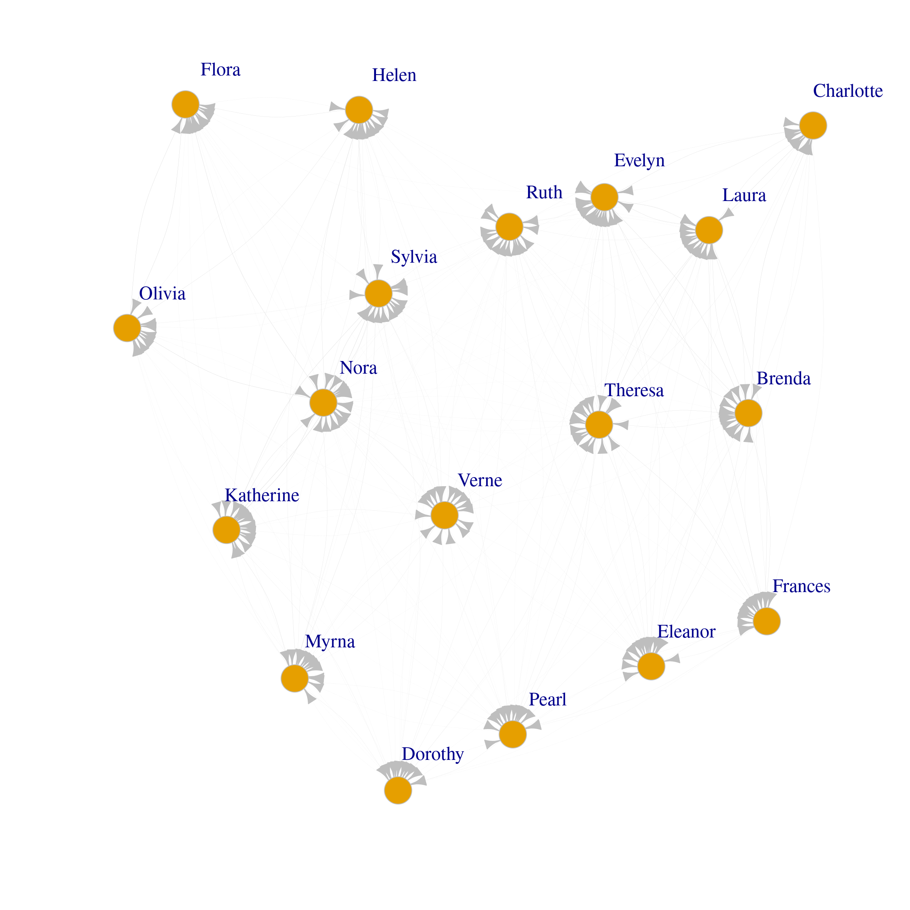
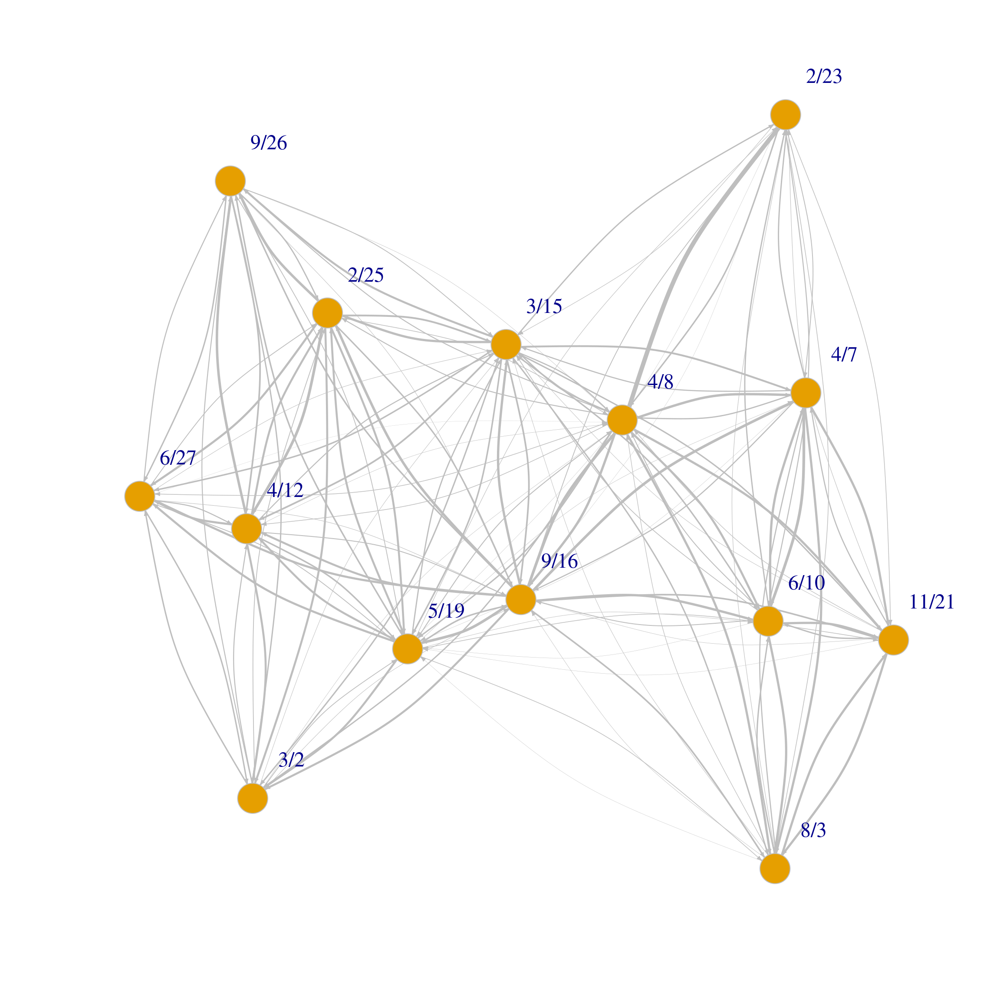

The Duality of Persons and Groups
Recall that in the one-mode case, multiplying the adjacency matrix times its transpose yields the common neighbors matrix \(\mathbf{M}\):
\[ \mathbf{M} = \mathbf{A}\mathbf{A}^T \]
As famously noted by Breiger (1974), doing the same for the affiliation matrix of a two-mode network also returns the common-neighbors matrix, but because objects in one mode can only connect to objects in the other mode, that means that the “common neighbors” of people have to be sets of groups and the common neighbors of groups have to be sets of people. This reveals the duality of persons and groups: Indirect connections between people are made up of the groups they share, and indirect connections between groups are composed of the people they share.
1 The Two-Mode Common Neighbors Matrices
1.1 The Dual Projections
In short, computing the common neighbors matrix for both people and groups, also called the projection of the two-mode network into each mode, yields a one-mode similarity matrix between people and groups, where similarity is defined by the number of objects they share in the other mode.
For the people, the relevant projection is:
\[ \mathbf{P} = \mathbf{A}\mathbf{A}^T \tag{1}\]
And for the groups:
\[ \mathbf{G} = \mathbf{A}^T\mathbf{A} \tag{2}\]
1.2 Projections in igraph
Let’s see how this works out with real data by loading our usual friend, the Southern Women data:
In this case, Equation 1 and Equation 2 yield:
Evelyn Laura Theresa Brenda Charlotte Frances Eleanor Pearl Ruth
Evelyn 8 6 7 6 3 4 3 3 3
Laura 6 7 6 6 3 4 4 2 3
Theresa 7 6 8 6 4 4 4 3 4
Brenda 6 6 6 7 4 4 4 2 3
Charlotte 3 3 4 4 4 2 2 0 2
Frances 4 4 4 4 2 4 3 2 2
Eleanor 3 4 4 4 2 3 4 2 3
Pearl 3 2 3 2 0 2 2 3 2
Ruth 3 3 4 3 2 2 3 2 4
Verne 2 2 3 2 1 1 2 2 3
Myrna 2 1 2 1 0 1 1 2 2
Katherine 2 1 2 1 0 1 1 2 2
Sylvia 2 2 3 2 1 1 2 2 3
Nora 2 2 3 2 1 1 2 2 2
Helen 1 2 2 2 1 1 2 1 2
Dorothy 2 1 2 1 0 1 1 2 2
Olivia 1 0 1 0 0 0 0 1 1
Flora 1 0 1 0 0 0 0 1 1
Verne Myrna Katherine Sylvia Nora Helen Dorothy Olivia Flora
Evelyn 2 2 2 2 2 1 2 1 1
Laura 2 1 1 2 2 2 1 0 0
Theresa 3 2 2 3 3 2 2 1 1
Brenda 2 1 1 2 2 2 1 0 0
Charlotte 1 0 0 1 1 1 0 0 0
Frances 1 1 1 1 1 1 1 0 0
Eleanor 2 1 1 2 2 2 1 0 0
Pearl 2 2 2 2 2 1 2 1 1
Ruth 3 2 2 3 2 2 2 1 1
Verne 4 3 3 4 3 3 2 1 1
Myrna 3 4 4 4 3 3 2 1 1
Katherine 3 4 6 6 5 3 2 1 1
Sylvia 4 4 6 7 6 4 2 1 1
Nora 3 3 5 6 8 4 1 2 2
Helen 3 3 3 4 4 5 1 1 1
Dorothy 2 2 2 2 1 1 2 1 1
Olivia 1 1 1 1 2 1 1 2 2
Flora 1 1 1 1 2 1 1 2 2 6/27 3/2 4/12 9/26 2/25 5/19 3/15 9/16 4/8 6/10 2/23 4/7 11/21 8/3
6/27 3 2 3 2 3 3 2 3 1 0 0 0 0 0
3/2 2 3 3 2 3 3 2 3 2 0 0 0 0 0
4/12 3 3 6 4 6 5 4 5 2 0 0 0 0 0
9/26 2 2 4 4 4 3 3 3 2 0 0 0 0 0
2/25 3 3 6 4 8 6 6 7 3 0 0 0 0 0
5/19 3 3 5 3 6 8 5 7 4 1 1 1 1 1
3/15 2 2 4 3 6 5 10 8 5 3 2 4 2 2
9/16 3 3 5 3 7 7 8 14 9 4 1 5 2 2
4/8 1 2 2 2 3 4 5 9 12 4 3 5 3 3
6/10 0 0 0 0 0 1 3 4 4 5 2 5 3 3
2/23 0 0 0 0 0 1 2 1 3 2 4 2 1 1
4/7 0 0 0 0 0 1 4 5 5 5 2 6 3 3
11/21 0 0 0 0 0 1 2 2 3 3 1 3 3 3
8/3 0 0 0 0 0 1 2 2 3 3 1 3 3 3The off-diagonal entries of these square person-by-person (group-by-group) matrices are the number of groups (people) shared by each person (group), and the diagonals are each person’s number of memberships (the size of each group/event).
In igraph, the relevant function is called bipartite_projection. It takes a bipartite graph as an input and returns a list containing igraph graph objects of both projections by default:
In the graph objects produced by the bipartite_projection function, the actual shared memberships and shared members are stored as an attribute of each edge called weight, which the plotting code uses to set the edge.width:
$weight
[1] 6 6 7 3 4 3 3 3 2 2 2 2 2 1 2 1 1 6 6 3 4 4 3 2 2 2 2 2 1 1 1 6 4 4 4 4 3
[38] 3 3 3 2 2 2 2 1 1 4 4 4 3 2 2 2 2 2 1 1 1 2 2 2 1 1 1 1 3 2 2 1 1 1 1 1 1
[75] 1 3 2 2 2 2 2 1 1 1 2 2 2 2 2 2 1 2 1 1 3 3 2 2 2 2 2 1 1 4 3 3 3 3 2 1 1
[112] 4 4 3 2 3 1 1 6 3 2 5 1 1 6 4 2 1 1 4 1 2 2 1 1 1 1 1 2$weight
[1] 2 3 2 3 3 3 1 2 3 2 3 3 3 2 2 4 6 5 5 2 4 4 3 3 2 3 6 7 3 6 7 4 5 1 1 1 1 1
[39] 8 5 4 3 2 2 2 9 5 4 2 2 1 5 4 3 3 3 5 3 3 2 2 1 1 3 3 3So to get the weighted projection matrix, we need to type:
Evelyn Laura Theresa Brenda Charlotte Frances Eleanor Pearl Ruth
Evelyn 0 6 7 6 3 4 3 3 3
Laura 6 0 6 6 3 4 4 2 3
Theresa 7 6 0 6 4 4 4 3 4
Brenda 6 6 6 0 4 4 4 2 3
Charlotte 3 3 4 4 0 2 2 0 2
Frances 4 4 4 4 2 0 3 2 2
Eleanor 3 4 4 4 2 3 0 2 3
Pearl 3 2 3 2 0 2 2 0 2
Ruth 3 3 4 3 2 2 3 2 0
Verne 2 2 3 2 1 1 2 2 3
Myrna 2 1 2 1 0 1 1 2 2
Katherine 2 1 2 1 0 1 1 2 2
Sylvia 2 2 3 2 1 1 2 2 3
Nora 2 2 3 2 1 1 2 2 2
Helen 1 2 2 2 1 1 2 1 2
Dorothy 2 1 2 1 0 1 1 2 2
Olivia 1 0 1 0 0 0 0 1 1
Flora 1 0 1 0 0 0 0 1 1
Verne Myrna Katherine Sylvia Nora Helen Dorothy Olivia Flora
Evelyn 2 2 2 2 2 1 2 1 1
Laura 2 1 1 2 2 2 1 0 0
Theresa 3 2 2 3 3 2 2 1 1
Brenda 2 1 1 2 2 2 1 0 0
Charlotte 1 0 0 1 1 1 0 0 0
Frances 1 1 1 1 1 1 1 0 0
Eleanor 2 1 1 2 2 2 1 0 0
Pearl 2 2 2 2 2 1 2 1 1
Ruth 3 2 2 3 2 2 2 1 1
Verne 0 3 3 4 3 3 2 1 1
Myrna 3 0 4 4 3 3 2 1 1
Katherine 3 4 0 6 5 3 2 1 1
Sylvia 4 4 6 0 6 4 2 1 1
Nora 3 3 5 6 0 4 1 2 2
Helen 3 3 3 4 4 0 1 1 1
Dorothy 2 2 2 2 1 1 0 1 1
Olivia 1 1 1 1 2 1 1 0 2
Flora 1 1 1 1 2 1 1 2 0 6/27 3/2 4/12 9/26 2/25 5/19 3/15 9/16 4/8 6/10 2/23 4/7 11/21 8/3
6/27 0 2 3 2 3 3 2 3 1 0 0 0 0 0
3/2 2 0 3 2 3 3 2 3 2 0 0 0 0 0
4/12 3 3 0 4 6 5 4 5 2 0 0 0 0 0
9/26 2 2 4 0 4 3 3 3 2 0 0 0 0 0
2/25 3 3 6 4 0 6 6 7 3 0 0 0 0 0
5/19 3 3 5 3 6 0 5 7 4 1 1 1 1 1
3/15 2 2 4 3 6 5 0 8 5 3 2 4 2 2
9/16 3 3 5 3 7 7 8 0 9 4 1 5 2 2
4/8 1 2 2 2 3 4 5 9 0 4 3 5 3 3
6/10 0 0 0 0 0 1 3 4 4 0 2 5 3 3
2/23 0 0 0 0 0 1 2 1 3 2 0 2 1 1
4/7 0 0 0 0 0 1 4 5 5 5 2 0 3 3
11/21 0 0 0 0 0 1 2 2 3 3 1 3 0 3
8/3 0 0 0 0 0 1 2 2 3 3 1 3 3 01.3 Visualizing the Weighted Projections
We can also use the weights to draw a weighted graph network plot of people and group projections. All we have to do is set the edge.width argument to the value of the edge weight attribute in the corresponding graph:
Code
set.seed(123)
plot(G.p,
vertex.size = 8, vertex.frame.color = "lightgray",
vertex.label.dist = 2, edge.curved = 0.2,
vertex.label.cex = 1.5, edge.color = "lightgray",
edge.width = E(G.p)$weight
)
set.seed(123)
plot(G.g,
vertex.size = 8, vertex.frame.color = "lightgray",
vertex.label.dist = 2, edge.curved = 0.2,
vertex.label.cex = 1.5, edge.color = "lightgray",
edge.width = E(G.g)$weight
)

1.4 Vertex Strength and the Dual Connection
Note that because both G.p and G.g are weighted graphs, we can calculate the weighted version of degree for both persons and groups from them (sometimes called the vertex strength).
In igraph, we can do this using the strength function, which takes a weighted graph object as input:
Evelyn Laura Theresa Brenda Charlotte Frances Eleanor Pearl
50 45 57 46 24 32 36 31
Ruth Verne Myrna Katherine Sylvia Nora Helen Dorothy
40 38 33 37 46 43 34 24
Olivia Flora
14 14 6/27 3/2 4/12 9/26 2/25 5/19 3/15 9/16 4/8 6/10 2/23 4/7 11/21
19 20 32 23 38 41 48 59 46 25 13 28 18
8/3
18 Interestingly, as noted by Faust (1997, 167), there is a (dual!) mathematical connection between the strength of each vertex in the weighted projection and the centrality of the nodes from the other set they are connected to:
For people, the vertex strength is equal to the sum of the sizes of the groups they belong to minus their own degree.
For groups, the vertex strength is equal to the sum of the memberships of the people that belong to them, minus their own size.
We can verify this relationship for Evelyn:
Code
Evelyn
50 Which is indeed Evelyn’s vertex strength.
Dually, the same relation applies to groups:
Code
6/27
19 This is indeed the vertex strength of the event held on 6/27.
2 Visualizing Dual Projections Using the Maximum Spanning Tree
As we saw, projecting the original biadjacency matrix using Breiger’s (1974) approach yields two weighted one-mode networks. Because an edge exists between two persons (groups) if they share at least one person (group), the resulting graphs tend to be dense, with high connectivity between nodes, as in Figure 1. This can make it hard to discern the connectivity structure of the projected networks and detect patterns.
One approach to simplifying the visual projections of two-mode networks is to compute a spanning tree of the resulting weighted graph. For any weighted network, a spanning tree is a graph that connects all nodes using exactly \(N-1\) edges, where \(N\) is the number of nodes, and contains no cycles.1
Because the edge weights in the projection encode tie strength rather than cost or distance, the tree we want is the maximum spanning tree: among all spanning trees of the projection, the one that keeps the largest possible total tie strength. This gives us the backbone of strongest ties running through the projected network, rather than the backbone of weakest ties that a cost-oriented minimum spanning tree would return.
To do this, we can follow Kruskal’s Algorithm, with one change: because we want the maximum spanning tree, we sort edges from strongest to weakest rather than weakest to strongest. Kruskal’s greedy procedure is otherwise identical:
- First, we create an edge list containing each of the edge weights of the one-mode projection graph.
- Then we sort the edge list by weight in decreasing order (largest weights first).
- Then, we create an undirected empty graph with \(N\) nodes.
- Now, we go down the edge list, adding edges to the empty graph one at a time, at each step checking that:
- We are not connecting nodes that have already been connected (avoiding multiedges).
- Additional edges do not create cycles (as the resulting graph would no longer be a tree).
We stop when we have the desired number of edges (\(N-1\)), meaning all nodes are connected in the tree.
Note that this is exactly the standard minimum-spanning-tree version of Kruskal’s algorithm run on inverted distances \(d_{ij} = 1/w_{ij}\) (as built-in implementations such as mst(G.p, weights = 1 / E(G.p)$weight) do under the hood), since both induce the same edge ordering. Working directly with the original weights keeps them in their natural shared-membership interpretation.
Here’s a function that does all of this, taking the weighted projection igraph object as input and returning the maximum spanning tree:
Code
make.max.st <- function(x) {
edgelist <- data.frame(as_edgelist(x), w = E(x)$weight) # creating weighted edge list
edgelist <- edgelist[order(edgelist$w, decreasing = TRUE), ] # ordering by edge weight (largest first)
Tr <- make_empty_graph(n = vcount(x), directed = FALSE) # creating empty graph
V(Tr)$name <- V(x)$name
k <- 1
n.e <- ecount(Tr)
n.v <- vcount(Tr) - 1
while (n.e < n.v) {
if (k > nrow(edgelist)) { # guard: projection is disconnected
stop("Graph is disconnected: no spanning tree exists.")
}
i <- match(edgelist[k, 1], V(x)$name) # vertex id of first endpoint
j <- match(edgelist[k, 2], V(x)$name) # vertex id of second endpoint
if (!are_adjacent(Tr, i, j)) { # checking nodes are not adjacent
Tr <- add_edges(Tr, c(i, j)) # add edge
n.e <- ecount(Tr) # new edge id
if (!is_acyclic(Tr)) { # checking new edge does not add a cycle
Tr <- delete_edges(Tr, n.e) # delete edge if it adds a cycle
}
}
n.e <- ecount(Tr)
k <- k + 1
}
return(Tr)
}We can now build the maximum spanning tree graph for each weighted projection:
And here’s a point and line plot of the maximum spanning tree for persons and groups in the Southern Women data (we use the layout_as_tree option in igraph):
Code
set.seed(123)
plot(Tr.p,
vertex.size = 8, vertex.frame.color = "lightgray",
vertex.label.dist = 2, layout = layout_as_tree,
vertex.label.cex = 1.5, edge.color = "lightgray",
edge.width = 3, vertex.color = cluster_edge_betweenness(Tr.p)$membership
)
set.seed(123)
plot(Tr.g,
vertex.size = 8, vertex.frame.color = "lightgray",
vertex.label.dist = 2, layout = layout_as_tree,
vertex.label.cex = 1.5, edge.color = "lightgray",
edge.width = 3, vertex.color = cluster_edge_betweenness(Tr.g)$membership
)

3 An Asymmetric Approach to Weighted Projection
Zhou et al. (2007) describe an asymmetric approach to projecting a two-mode network into two one-mode weighted networks, which addresses two limitations of the Breiger projections computed earlier:
First, there is the fact that the standard projection always results in a symmetric weighted adjacency matrix.
Secondly, the fact that edges incident to degree-one nodes lose all their information in the traditional projection of the opposite mode, as a group with a single member creates no person-person ties in the person projection, and a person with a single membership creates no group-group ties in the group projection.
3.1 The Weighting Scheme
Formally, in Zhou et al. (2007)’s approach, each entry of the person projection matrix is computed by summing over the groups two people share, but instead of counting each shared group as one point, we weigh it by the group’s degree and the other person’s degree.
So if \(\mathbf{k}^p\) is the degree vector of the people, \(\mathbf{k}^g\) is the degree vector of the groups, and \(m\) is the total number of groups, then the entry \(p_{ij}\) of the weighted person projection matrix is computed as:
\[ p_{ij} = \sum_{l=1}^{m} \frac{a_{il}a_{jl}}{k^p_j k^g_l} \tag{3}\]
The numerator of this equation counts the total number of memberships shared by persons \(i\) and \(j\) as \(a_{il}a_{jl}= 1\) only when group \(l\) is shared between persons \(i\) and \(j\), but the denominator weights each shared membership by the number of memberships of person \(j\) and the size of the shared group \(l\). The intuition is that if person \(j\) belongs to many groups, sharing a group with them is less meaningful for \(i\); similarly, if group \(l\) has many members, sharing that group with another person is also less meaningful.
On the group side, the entry \(g_{ij}\) of the weighted group projection matrix is computed similarly:
\[ g_{ij} = \sum_{l=1}^{n} \frac{a_{li}a_{lj}}{k^g_j k^p_l} \tag{4}\]
Where \(n\) is the total number of people, and the intuition is the same as for the person projection. If group \(j\) has many members, sharing a member matters less from group \(i\)’s perspective; similarly, if the person \(l\) they share belongs to many groups, sharing them should matter less.
3.2 Computing the Weighted Projections
Let’s compute these projections in R by defining a function that implements the formulas above:
Code
# Function to compute the weighted person projection
zhou.proj <- function(A) {
k_p <- rowSums(A) # degree vector of people
k_g <- colSums(A) # degree vector of groups
m <- ncol(A) # total number of groups
n <- nrow(A) # total number of people
P.w <- matrix(0, nrow = nrow(A), ncol = nrow(A)) # initialize person projection matrix
for (i in 1:nrow(A)) {
for (j in 1:nrow(A)) {
P.w[i, j] <- sum((A[i, ] * A[j, ]) / (k_p[j] * k_g)) # compute entry p_ij
}
}
G.w <- matrix(0, nrow = ncol(A), ncol = ncol(A)) # initialize group projection matrix
for (i in 1:ncol(A)) {
for (j in 1:ncol(A)) {
G.w[i, j] <- sum((A[, i] * A[, j]) / (k_g[j] * k_p)) # compute entry g_ij
}
}
rownames(P.w) <- colnames(P.w) <- rownames(A) # set row and column names for person projection
rownames(G.w) <- colnames(G.w) <- colnames(A) # set row and column names for group projection
return(list("P.w" = P.w, "G.w" = G.w))
} Now we can apply this function to our biadjacency matrix A to get the weighted person and group projections:
Code
Evelyn Laura Theresa Brenda Charlotte
Evelyn 0.186 0.165 0.144 0.153 0.135
Laura 0.144 0.179 0.115 0.132 0.098
Theresa 0.144 0.132 0.157 0.120 0.160
Brenda 0.134 0.132 0.105 0.167 0.160
Charlotte 0.068 0.056 0.080 0.092 0.160 6/27 3/2 4/12 9/26 2/25
6/27 0.137 0.089 0.068 0.067 0.051
3/2 0.089 0.131 0.065 0.062 0.049
4/12 0.137 0.131 0.173 0.161 0.129
9/26 0.089 0.083 0.107 0.161 0.080
2/25 0.137 0.131 0.173 0.161 0.192The Zhou et al. (2007) approach results in two asymmetric weighted adjacency matrices for the person and group projections, which can be used for various analyses such as clustering, centrality analysis, or visualization. The key advantage of this approach is that it accounts for the degree of nodes in the other mode, providing a better representation of the relationships in the two-mode network.
3.3 The Matrix Formulation
Note that we can also express the Zhou et al. (2007) projection in matrix notation. If \(\mathbf{A}\) is the biadjacency matrix, \(\mathbf{D}_p\) is the diagonal degree matrix of the people, and \(\mathbf{D}_g\) is the diagonal degree matrix of the groups, then the weighted person projection matrix \(\mathbf{P}\) and the weighted group projection matrix \(\mathbf{G}\) can be computed as:
\[ \mathbf{P} = \mathbf{A} \mathbf{D}_g^{-1} \mathbf{A}^T \mathbf{D}_p^{-1} \tag{5}\]
\[ \mathbf{G} = \mathbf{A}^T \mathbf{D}_p^{-1} \mathbf{A} \mathbf{D}_g^{-1} \tag{6}\]
Where \(\mathbf{D}_p^{-1}\) and \(\mathbf{D}_g^{-1}\) are the inverses of the diagonal degree matrices of the people and groups, respectively. This matrix formulation allows for more efficient computation of the projections, especially for larger networks, as it leverages matrix operations instead of nested loops. We can compute the person projection using this matrix formulation as follows:
Code
P.w <- A %*% diag(1 / colSums(A)) %*% t(A) %*% diag(1 / rowSums(A)) # diagonal rescaling, cheaper than inverting via solve()
colnames(P.w) <- rownames(P.w) <- rownames(A) # set row and column names for person projection
G.w <- t(A) %*% diag(1 / rowSums(A)) %*% A %*% diag(1 / colSums(A))
colnames(G.w) <- rownames(G.w) <- colnames(A) # set row and column names for group projection
round(P.w[1:5, 1:5], 3) # view the first 5 rows and columns of the person projection Evelyn Laura Theresa Brenda Charlotte
Evelyn 0.186 0.165 0.144 0.153 0.135
Laura 0.144 0.179 0.115 0.132 0.098
Theresa 0.144 0.132 0.157 0.120 0.160
Brenda 0.134 0.132 0.105 0.167 0.160
Charlotte 0.068 0.056 0.080 0.092 0.160 6/27 3/2 4/12 9/26 2/25
6/27 0.137 0.089 0.068 0.067 0.051
3/2 0.089 0.131 0.065 0.062 0.049
4/12 0.137 0.131 0.173 0.161 0.129
9/26 0.089 0.083 0.107 0.161 0.080
2/25 0.137 0.131 0.173 0.161 0.192Which gives us the same result as the nested loop implementation.
3.4 Resource Conservation and Asymmetry
A telltale signature of the Zhou et al. (2007) approach, which follows directly from the resource-allocation dynamics, is that each column of the projection matrices sums to one (the matrices are column-stochastic): every node distributes a fixed budget of one unit of resource across the other nodes in its mode.
Evelyn Laura Theresa Brenda Charlotte Frances Eleanor Pearl
1 1 1 1 1 1 1 1
Ruth Verne Myrna Katherine Sylvia Nora Helen Dorothy
1 1 1 1 1 1 1 1
Olivia Flora
1 1 6/27 3/2 4/12 9/26 2/25 5/19 3/15 9/16 4/8 6/10 2/23 4/7 11/21
1 1 1 1 1 1 1 1 1 1 1 1 1
8/3
1 Note that as promised, the entries of the person and group projection matrices are not symmetric, meaning that \(p_{ij} \neq p_{ji}\) and \(g_{ij} \neq g_{ji}\) in general. This is because the weighting scheme accounts for the degree of the column node and the degree of the shared nodes in the other mode, so the ratio of the two directed weights between any pair of nodes is fixed by their degree ratio (\(p_{ij}/p_{ji} = k^p_i/k^p_j\) in Zhou et al. (2007)’s Equation 7).
We can check this formally using the base R function isSymmetric:
Code
[1] TRUE[1] TRUE[1] FALSE[1] FALSEThe Breiger projections return TRUE while the degree-weighted projections return FALSE.
3.5 Building the Directed Weighted Projections
We can create weighted directed igraph objects from the degree-weighted projections using the function graph_from_adjacency_matrix as follows:
Note that we set the mode argument to directed, the weighted argument to TRUE, and the diag argument to FALSE (to ignore the diagonal entries). Two caveats are worth keeping in mind here. First, in Zhou et al. (2007)’s resource-allocation semantics, the entry \(p_{ij}\) is the fraction of resource that person \(j\) transfers to person \(i\) (the columns of \(\mathbf{P}\) are the resource sources), so the directed edges produced by graph_from_adjacency_matrix (which reads entry \([i, j]\) as an arrow from \(i\) to \(j\)) point against the direction of resource flow. Second, the diagonal entries \(p_{ii}\) that we discard here are not an artifact in Zhou et al. (2007): each self-weight is the maximum element of its column and encodes how much of a node’s resource stays with itself (the paper builds a measure of node “independence” on exactly these diagonal entries), so analyses that want to reproduce the paper’s use of the projection should keep the diagonal.
We can, of course, plot the directed weighted graphs on each mode as usual. Because the Zhou et al. (2007) weights are small fractions (they sum to one across each column), we rescale the edge widths for display so the edges are visible rather than just the arrowheads:
Code
set.seed(123)
plot(g.p,
vertex.size = 8, vertex.frame.color = "gray",
vertex.label.dist = 2, edge.curved = 0.2,
vertex.label.cex = 1.5, edge.color = "gray",
edge.width = 5 * E(g.p)$weight / max(E(g.p)$weight), # rescaled for display (raw weights are small fractions)
edge.arrow.size = 0.3
)
plot(g.g,
vertex.size = 8, vertex.frame.color = "gray",
vertex.label.dist = 2, edge.curved = 0.2,
vertex.label.cex = 1.5, edge.color = "gray",
edge.width = 5 * E(g.g)$weight / max(E(g.g)$weight), # rescaled for display (raw weights are small fractions)
edge.arrow.size = 0.3
)

References
Footnotes
Recall that a tree is a connected graph without any cycles.↩︎